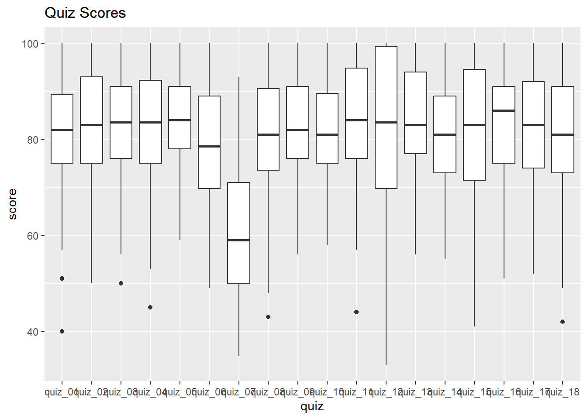
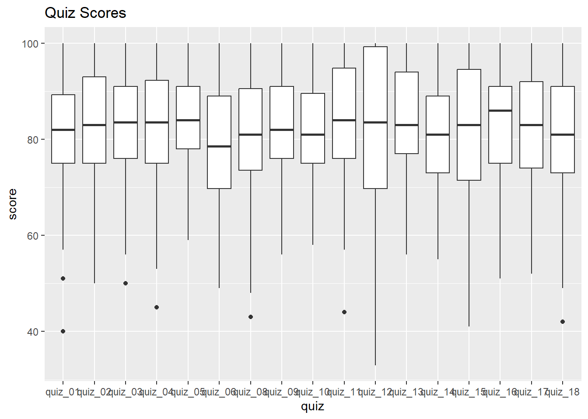

Data Wrangling Exercise 2
In this exercise, we’ll continue to work with the pop-quiz data using the following techiques:
- group & summarize
- joins
- reshape
Setup
Load the packages we’ll be using:
We’ll continue to work with the pop-quiz data we saw in the first exercise:
ss_fn <- here::here("./exercises/data/student_scores.tsv")
# file.exists(ss_fn)
ss_nn_tbl <- readr::read_tsv(file = ss_fn) |>
rename_all(tolower) |>
rename_all(~ str_replace_all(., " ", "_"))Rows: 100 Columns: 25
── Column specification ────────────────────────────────────────────────────────
Delimiter: "\t"
chr (6): Name, Sex, Height, Section, Treatment, Major
dbl (19): Year, Quiz 01, Quiz 02, Quiz 03, Quiz 04, Quiz 05, Quiz 06, Quiz 0...
ℹ Use `spec()` to retrieve the full column specification for this data.
ℹ Specify the column types or set `show_col_types = FALSE` to quiet this message.head(ss_nn_tbl)Group and Summarize
For this section, we’ll work with the first quiz only:
ss_q1_tbl <- ss_nn_tbl |>
select(name, section, treatment, quiz_01)Let’s compute the number of students per section. We start by grouping the rows by section:
ss_q1_tbl |>
group_by(section)Note: Simply grouping rows with group_by() doesn’t do anything useful!
You have to follow it up with something else (usually summarize()).
To count the number of rows per group, we can define a new column using n().
summarize()
What gets fed into summarize() are groups of rows (one at a time).
Hence, when you define columns in summarize(), you have to use functions that can receive multiple values and return just one (i.e., aggregate functions). Common examples include n(), mean(), sum(), max(), first(), etc.
Next, compute the average score on Quiz 1 by section:
CHALLENGE
- Compute the average score on Quiz 1 by treatment group.
## Your answer hereGroup on Multiple Columns
We can group by more than one column. For example, to view the number of students in each treatment group per section:
`summarise()` has grouped output by 'section'. You can override using the
`.groups` argument.CHALLENGE
- Compute the number of students per treatment group and sex.
## Your answer hereJoins
Joining tables together is extremely useful for wrangling data!
Let’s bring in a table with more info about the discussion sections:
sect_info_fn <- here::here("exercises/data/section_info.tsv")
# file.exists(sect_info_fn)
sect_info_tbl <- read_tsv(sect_info_fn)Rows: 4 Columns: 4
── Column specification ────────────────────────────────────────────────────────
Delimiter: "\t"
chr (3): section, ta, day
time (1): time
ℹ Use `spec()` to retrieve the full column specification for this data.
ℹ Specify the column types or set `show_col_types = FALSE` to quiet this message.sect_info_tblTo join tables on a common column, you can use dplyr::left_join():
ss_q1_sect_tbl <- ss_q1_tbl |>
left_join(sect_info_tbl, by = "section")
ss_q1_sect_tblIn addition to left_join(), dplyr has a right_join(), inner_join(), full_join(), semi_joni(), and even anti_join()!
You can use join_by() as the value of the by argument if the join columns have different names, you need to join on multiple columns, or the join relationship uses a comparison operator other than ‘==’.
Use the New Columns for Summaries
Once the tables are joined, the new columns are available for use.
For each Teaching Assistant, compute the number of students, and their avg on quiz 1.
CHALLENGE
- How many students have discussion on each day of the week?
## Your answer hereReshape the data
So far, we’ve only been working with quiz_01. But there are 17 other quizzes!
Wouldn’t it be nice if we could:
- count up the total number of
NAs per student for all quizzes
- replace
NAvalues with something else for all quizzes
- compute the average of all quiz scores per student (i.e., for their final grade)
- compare performance across quizzes, sections and treatment groups
All of the above would be a lot easier to do if we make these data tidy!
In this case, to make the data tidy we have to transform it from its current wide format to a long format. We can do with this with tidyr::pivot_longer() with the following arguments:
-
cols- a tidyselect expression identifying the columns we want turn into new rows
-
names_to- where to put the names of those columns (because they’re going to disappear)
-
values_to- where to put the values in those columns
ss_long_tbl <- ss_nn_tbl |>
pivot_longer(
cols = starts_with("quiz"),
names_to = "quiz",
values_to = "score"
)See what we got:
Visualize and Summarise all of the Quizes
Now that the data are tidy, we can make a box-and-whiskers plots for all of the quizzes:
ggplot(ss_long_tbl, aes(y = score, x = quiz)) +
geom_boxplot() +
labs(title = "Quiz Scores")Warning: Removed 330 rows containing non-finite outside the scale range
(`stat_boxplot()`).
Something’s off with Quiz 7! Let’s remove that from our dataset.
View the box plots again:
ggplot(ss_cln_tbl, aes(y = score, x = quiz)) +
geom_boxplot() +
labs(title = "Quiz Scores")Warning: Removed 313 rows containing non-finite outside the scale range
(`stat_boxplot()`).
Much better!
CHALLENGE
- Compute the final pop-quiz average for each student (ignoring NAs for now). Compute the student ranks for the total average.
## Your answer here- Compute the number of NAs per student and display it next to final average. Does this support the theory that coming to class supports learning?
## Your answer here- Create box-and-whisker plots of all quizzes combined for each treatment group. (Does it look any of them had a significant effect?)
## Your answer hereDONE!
Remember to render your Quarto document so you have a pretty HTML file to keep for future reference.